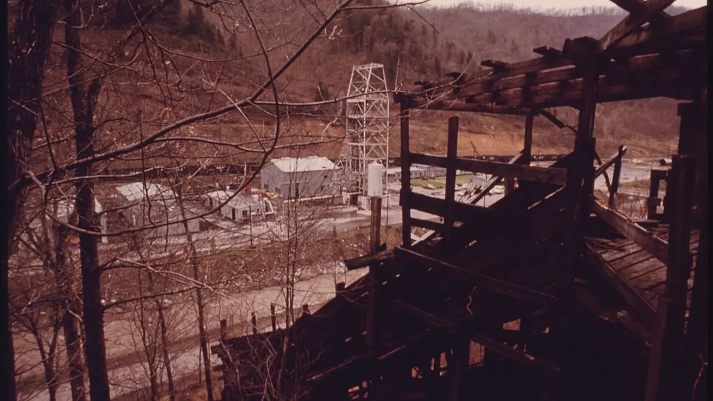
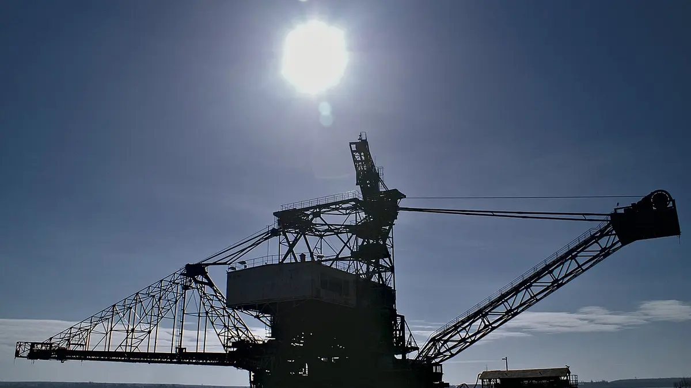
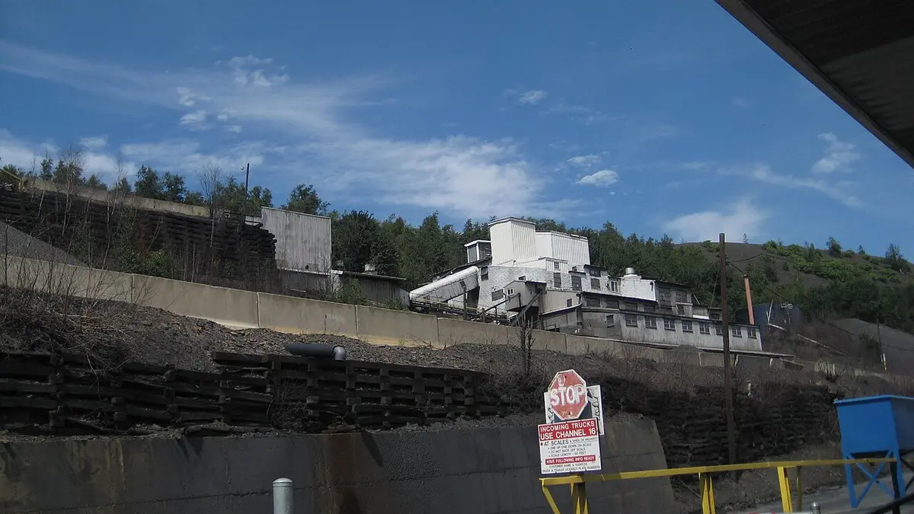
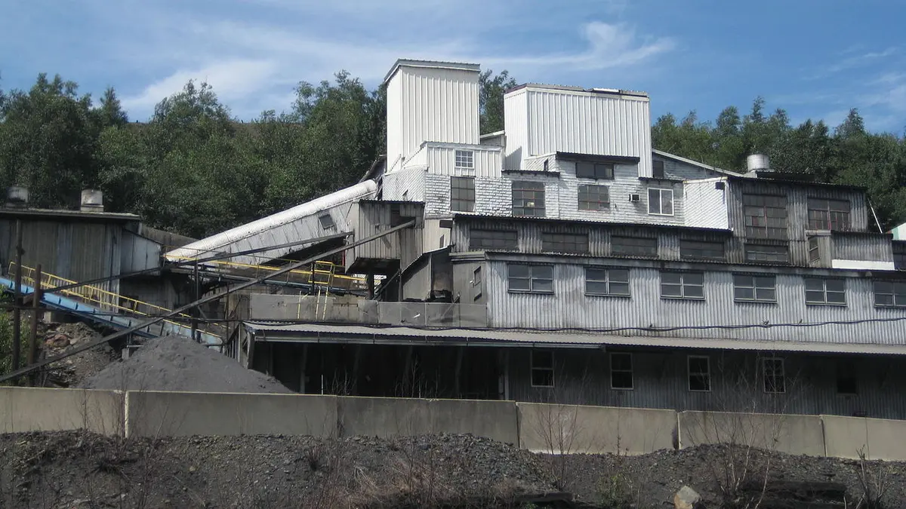

Mức thực tế phụ thuộc vị trí, ngày công, năng suất và đơn vị.
Tuyển sinh nghề mỏ · TKV Quảng Ninh
Học nghề mỏ – làm việc tại Quảng Ninh
Kiểm tra điều kiện trước khi làm hồ sơ. Gửi năm sinh, chiều cao/cân nặng và sức khỏe hiện tại để được Thầy Linh tư vấn.
20–25 triệu/tháng
Thu nhập thợ lò tham khảo sau đào tạo, phụ thuộc vị trí, ngày công, năng suất và đơn vị.
Miễn học phí theo chỉ tiêuHỗ trợ sinh hoạt 7,5 triệuĂn 3 bữa/ngày · Ký túc xá khép kínThời gian học: 2–3 hoặc 10 tháng
Liên hệ nhanh
Chọn cách thuận tiện nhất với bạn
Thu nhập & đãi ngộ
Quyền lợi nổi bật khi học và làm nghề mỏ
Chính sách cụ thể được kiểm tra theo doanh nghiệp và từng đợt tiếp nhận trước khi hướng dẫn hồ sơ.
Bố trí ăn 3 bữa/ngày, ở ký túc xá khép kín và cấp bảo hộ theo quy định.
Mức hưởng và hình thức hỗ trợ cụ thể được xác nhận theo từng đợt tiếp nhận.
Người đạt yêu cầu được doanh nghiệp cử đi học tiếp nhận và ký hợp đồng.
Điều kiện cơ bản
- Nam từ 18 đến 40 tuổi
- Chiều cao từ 1m53
- Cân nặng từ 47kg
- Được kiểm tra sức khỏe theo yêu cầu
Học nghề tại Quảng Ninh
- Khai thác mỏ và xây dựng mỏ: 2–3 tháng
- Cơ điện mỏ: 10 tháng
- Bố trí ăn 3 bữa/ngày và ở ký túc xá
- Lịch cụ thể xác nhận theo từng đợt
Làm việc tại doanh nghiệp TKV
Người tốt nghiệp đạt yêu cầu được doanh nghiệp thuộc Tập đoàn Công nghiệp Than – Khoáng sản Việt Nam cử đi học tiếp nhận làm việc.
Chế độ có thể gồm ăn ca miễn phí, xe đưa đón, chỗ ở tập thể, bảo hiểm và chăm sóc sức khỏe.
Tìm hiểu lương và đời sống →Thông tin cần biết
Chế độ, chính sách và hồ sơ học nghề mỏ
Nội dung dưới đây được tổng hợp từ Thông báo số 8588/TB-CĐTKV ngày 04/12/2024, áp dụng cho tuyển sinh năm 2025. Đây là căn cứ tham khảo chính thức; điều kiện và mức hưởng năm 2026 được xác nhận lại theo từng doanh nghiệp, nghề học và đợt tiếp nhận.
Miễn kinh phí đào tạo
Doanh nghiệp ký hợp đồng tuyển lao động và cử người học nghề; người học được miễn toàn bộ kinh phí đào tạo theo chương trình áp dụng.
Ăn, ở trong thời gian học
Thông báo 2025 nêu phục vụ miễn phí 3 bữa/ngày, 7 ngày/tuần và bố trí ký túc xá khép kín 6 người/phòng.
Quyền lợi khi thực tập
Trong thời gian thực tập tại doanh nghiệp, mức hưởng được nêu từ 85% đến 100% lương công nhân cùng dây chuyền, kèm bảo hộ, ăn định lượng, xe đưa đón và chỗ ở.
Việc làm sau tốt nghiệp
Người tốt nghiệp đạt yêu cầu được doanh nghiệp ký hợp đồng lao động, bố trí việc làm theo nghề đào tạo và hưởng các chế độ bảo hiểm theo quy định.
Ngành nghề tuyển dụng
- Khai thác mỏ và xây dựng mỏ2–3 tháng
- Cơ điện mỏ10 tháng
Hồ sơ cần mang
Hồ sơ cần chuẩn bị
- Căn cước công dân
- Giấy khai sinh
- Bằng tốt nghiệp cấp 2 hoặc cấp 3 (nếu có; chưa có thì không bắt buộc)
Góc nhìn thực tế
Video câu chuyện công nhân
Xem câu chuyện người lao động, môi trường làm việc và đời sống vùng mỏ trước khi đăng ký.
Câu chuyện công nhân
Hành trình lập nghiệp cùng nghề mỏ
Môi trường thực tế
Hình ảnh ngành mỏ
Khám phá công việc, con người và đời sống tại vùng Than Quảng Ninh.


5 bước đơn giản
Quy trình tư vấn
Từ kiểm tra ban đầu đến khi nhận hướng dẫn phù hợp với từng đợt tuyển sinh.
- 1
Gửi thông tin
Năm sinh, chiều cao, cân nặng và sức khỏe.
- 2
Kiểm tra sơ bộ
Đối chiếu điều kiện tuyển thợ lò hiện tại.
- 3
Tư vấn trực tiếp
Giải đáp về học nghề, chế độ và việc làm.
- 4
Chuẩn bị hồ sơ
Nhận danh sách giấy tờ và lịch tiếp nhận.
- 5
Nhập học
Hoàn thiện thủ tục theo hướng dẫn từng đợt.
Thư viện chuyên sâu
50 bài cẩm nang nghề mỏ nên đọc
Điều kiện, hồ sơ, học nghề, công việc, thu nhập, phúc lợi, an toàn, công nghệ và hướng dẫn riêng cho lao động từng tỉnh.

13.507+ thợ lòSố liệu TKV năm 2025
Hơn 13.500 thợ lò thu nhập trên 300 triệu đồng/năm
Chiếm 57% tổng số thợ lò; nhóm thu nhập cao nhất vượt 700 triệu đồng.
Xem số liệu chi tiết →2022–2025
Dữ liệu qua các năm
Ngày càng nhiều thợ lò đạt trên 300 triệu/năm
Từ 6.941 người năm 2022 lên hơn 13.507 người năm 2025.
Xem bảng theo năm →


Hỗ trợ từ xa
Tư vấn theo tỉnh
Chọn tỉnh để xem video công nhân đồng hương và bảng lương thực tế trước khi đăng ký.
NGƯỜI THẬT · BẢNG LƯƠNG THẬT
21 ảnh lương
Thanh Hóa
Công nhân Hà Văn Phú – Mường Lát, thu nhập trên 300 triệu đồng/năm
 Xem bảng lương thực tếẢnh từ album Google Photos theo tỉnh
Xem bảng lương thực tếẢnh từ album Google Photos theo tỉnh
Dữ liệu ảnh lương đang được cập nhật
Chưa có album Google Photos công khai riêng cho tỉnh này.
Video và ảnh lương được đối chiếu theo đúng tỉnh Thanh Hóa.
Thu nhập trong video và bảng lương là trường hợp thực tế để tham khảo; mức hưởng phụ thuộc vị trí, ngày công, năng suất và đơn vị.
Người đồng hành
Tôi là ai?
Tôi là Nguyễn Tử Linh – Thầy Linh Tuyển Thợ Mỏ. Tôi trực tiếp tiếp nhận thông tin, kiểm tra điều kiện ban đầu và hướng dẫn người lao động tìm hiểu lộ trình học nghề mỏ tại Quảng Ninh.
Điều kiện cụ thể được kiểm tra trước khi hướng dẫn hồ sơ. Thông tin được tư vấn theo từng đợt tiếp nhận.
Trao đổi trực tiếpKiểm tra từng trường hợpHướng dẫn rõ từng bước
Giải đáp nhanh
Câu hỏi thường gặp
Nếu chưa thấy câu trả lời phù hợp, hãy nhắn trực tiếp để được tư vấn.
Ai có thể đăng ký học nghề mỏ?
Nam từ 18 đến 40 tuổi, cao từ 1m53, nặng từ 47kg và phù hợp yêu cầu sức khỏe. Điều kiện cụ thể được kiểm tra trước khi hướng dẫn hồ sơ.
Học nghề và làm việc ở đâu?
Người lao động học nghề và làm việc tại Quảng Ninh theo kế hoạch tiếp nhận từng đợt.
Trong thời gian thực tập tại doanh nghiệp được hưởng gì?
Thông báo năm 2025 nêu mức hưởng từ 85% đến 100% lương công nhân cùng dây chuyền, kèm bảo hộ lao động, ăn định lượng, xe đưa đón và chỗ ở. Chính sách hiện hành được xác nhận theo từng đợt.
Hồ sơ học nghề mỏ cần chuẩn bị gì?
Cần chuẩn bị căn cước công dân, giấy khai sinh và bằng tốt nghiệp cấp 2 hoặc cấp 3 nếu có. Trường hợp chưa có bằng thì không bắt buộc.
Trong thời gian học được hỗ trợ gì?
Người học được hỗ trợ 7,5 triệu trong thời gian học; chính sách đào tạo, ăn ở và mức hưởng cụ thể được xác nhận theo từng đợt tiếp nhận.
Cần gửi gì để kiểm tra điều kiện?
Hãy gửi năm sinh, chiều cao/cân nặng và tình trạng sức khỏe hiện tại qua Zalo hoặc Messenger.
Thu nhập thợ lò như thế nào?
Thu nhập thực tế phụ thuộc vị trí, ngày công, năng suất và đơn vị.